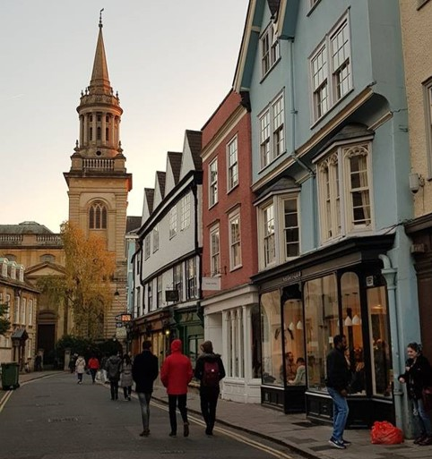

Ratings of the The Independant Coffee Shops of Oxford
The Handle Bar Café

Best brunches in town. Gets very busy so make sure you go early to grab your spot.
Amazing for brunch aswell aas a coffecoffee stop! Off the main street tucked above a bike repair shop.
- Work vibes: 7/10
- Take the rents: 9/10
- Quick caffeine fix: 3/10
- Aesthentic: 10/10
- Value for Money: 5/10
The Missing Bean

Great coffee and nice chilled out zone.
Oxford based chain dotted around Oxford. Very conveniant and always busy! Geat work vibes during off-peak times.
- Work vibes: 5/10
- Take the rents: 6/10
- Quick caffeine fix: 8/10
- Aesthetic: 10/10
- Value for Money: 5/10